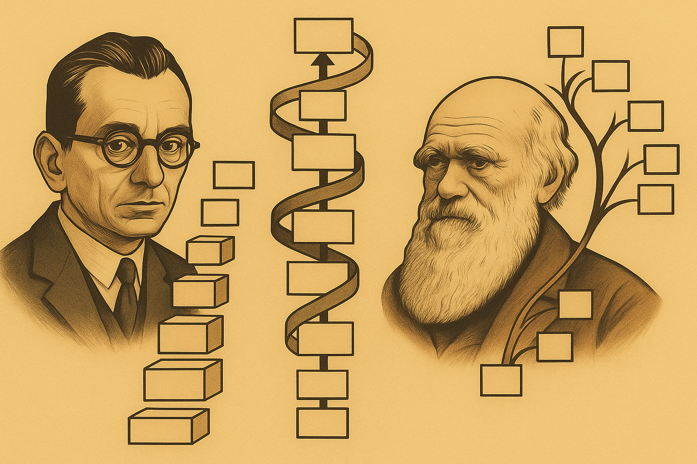

![]()

Introduction
Throughout the history of artificial intelligence research, the pursuit of autonomous systems capable of genuine self-improvement has represented a grand aspiration and a formidable challenge. From early theoretical conceptions proposed by pioneers like Alan Turing and John von Neumann, who introduced the foundational ideas of universal computation and self-reproducing automata, to more recent speculative theories of recursive improvement articulated by I.J. Good, the vision of self-improving AI has driven both academic inquiry and popular imagination. Despite this prolonged intellectual fascination, the practical realization of genuinely self-referential, autonomously improving AI systems has remained elusive. Challenges in formal verification, exponential complexity in proof generation, and intrinsic difficulties in designing scalable, beneficial self-modifications have consistently constrained progress toward fully autonomous, self-improving artificial agents.
One influential proposal within this lineage is the Gödel Machine, introduced by Jürgen Schmidhuber, a theoretical AI architecture predicated on self-referential programming that modifies itself only after formally proving that such modifications enhance its performance. While conceptually elegant, this approach has proven practically infeasible due to inherent computational limitations and the impossibility of generating rigorous proofs for most useful code modifications, particularly in complex, real-world environments.
Concurrently, the field of evolutionary computation has flourished, offering alternative paradigms for autonomous optimization through iterative cycles of variation, selection, and inheritance. These evolutionary frameworks emphasize open-ended exploration, allowing algorithms to continuously explore novel solutions rather than converging prematurely to local optima. Despite their success in various problem domains, evolutionary methods traditionally lacked mechanisms for the direct recursive improvement of the algorithm’s own self-improvement mechanisms. As such, bridging the gap between evolutionary exploration and recursive self-improvement has emerged as a compelling yet unresolved challenge.
The recently proposed Darwin Gödel Machine (DGM) seeks explicitly to integrate these two historically separate threads—Schmidhuber’s formal, proof-driven self-improvement concept and the rich, open-ended mechanisms inherent to evolutionary computation. Instead of relying on formal proofs, the DGM empirically validates proposed modifications through rigorous benchmark testing, thereby operationalizing self-improvement within a practical, observable performance framework. By maintaining an evolving archive of diverse self-modifying agents and leveraging population-based open-ended search, the DGM circumvents the limitations of traditional Gödel Machine approaches, allowing recursive self-modification grounded in empirical efficacy rather than theoretical provability.
In this commentary, we systematically analyze the DGM by situating it within its historical context, clearly delineating its novel methodological contributions, and thoroughly examining its broader implications for future self-improving AI research. The essay will explore how the integration of evolutionary open-endedness with empirical validation offers a transformative paradigm, critically assessing potential impacts on software engineering, AI safety, ethical governance, and broader technological advancement. Through this exploration, we aim to clarify both the promise and the profound responsibilities that accompany the advent of increasingly autonomous and capable artificial intelligence systems.
Historical context of self-improving systems
Early conceptual foundations
The ambition to create autonomous systems capable of self-improvement can be traced back to foundational work in computational theory. Alan Turing’s landmark concept of a universal computing machine, first described in 1936, laid the groundwork by demonstrating the theoretical possibility of machines capable of performing any conceivable computation. Turing’s insight established the conceptual possibility of machines modifying their instructions autonomously, potentially achieving forms of self-directed improvement. Likewise, John von Neumann significantly extended this notion in the 1950s through his exploration of self-reproducing automata. Von Neumann envisioned automata that could replicate themselves, including replicating their blueprint or instructions, thereby embedding the initial concept of recursive self-improvement within computational frameworks. However, these early explorations remained primarily theoretical, constrained by the technological limits and computational resources of their time, yet laying essential groundwork for subsequent inquiries into autonomous improvement.
Good’s intelligence explosion hypothesis
The modern discourse on self-improving systems took a significant leap forward with I.J. Good’s influential formulation of what he termed the “intelligence explosion.” In his seminal 1966 essay, “Speculations Concerning the First Ultraintelligent Machine,” Good hypothesized that if an artificial system could surpass human intelligence even modestly, it could subsequently harness its superior intelligence to recursively enhance itself, rapidly leading to an exponential increase in intelligence—an event later termed the technological singularity. Good’s scenario introduced the notion of recursive self-improvement explicitly and compellingly, marking a turning point by shifting discussions from purely theoretical speculation toward serious considerations of practical mechanisms for achieving self-improvement. Nevertheless, Good’s hypothesis also introduced challenges, particularly around understanding and managing potentially unpredictable emergent behaviors in highly autonomous systems.
Schmidhuber’s Gödel Machine
Building on these foundational concepts, Jürgen Schmidhuber proposed the Gödel Machine in 2006, marking a notable effort to provide a rigorous, formalized framework for self-improving artificial intelligence. Schmidhuber’s Gödel Machine concept involves a self-referential program that can modify its own source code. Importantly, any self-modification must be supported by formal proofs demonstrating the modifications’ benefits—an approach heavily inspired by Kurt Gödel’s incompleteness theorem and formal systems. This requirement of provable beneficial modifications represented a crucial innovation, theoretically ensuring that any alteration to the system would enhance its performance and capabilities safely. The Gödel Machine thus provided a mathematically grounded ideal of autonomous improvement, theoretically capable of achieving optimal behavior across arbitrary problem domains through continuous, self-validated enhancement.
Limitations of proof-based approaches
Despite its compelling theoretical elegance, Schmidhuber’s Gödel Machine encountered substantial practical limitations. Most significantly, it quickly became apparent that generating formal proofs to verify beneficial code modifications was prohibitively complex, if not impossible, for realistic software applications of any meaningful complexity. The computational demands of formal verification grow exponentially with the complexity and dimensionality of potential self-modifications, rendering the Gödel Machine concept practically infeasible in most realistic settings. Consequently, while the Gödel Machine established an important theoretical benchmark, it also highlighted critical challenges around computational tractability, formal verification complexity, and the inherent limitations of purely analytical methods for validating beneficial modifications.
Emergence of empirical and evolutionary approaches
Parallel to these formal verification efforts, another strand of research emerged in evolutionary computation, rooted in the biological principles articulated by Charles Darwin—variation, selection, and inheritance. Beginning in earnest during the 1960s and expanding significantly from the 1980s onward, evolutionary algorithms demonstrated the practical potential of iterative, adaptive improvement processes. Genetic algorithms (Holland, 1975) and genetic programming (Koza, 1992) illustrated how autonomous systems could progressively refine their solutions to complex optimization problems through iterative search guided by empirically observed performance rather than theoretical proofs.
Furthermore, recent decades have seen significant developments in open-ended evolutionary search algorithms, such as Novelty Search (Lehman & Stanley, 2011) and MAP-Elites (Mouret & Clune, 2015), which prioritize exploration of diverse solutions rather than convergence on single optimal outcomes. Such algorithms effectively mitigate the risk of becoming trapped in local optima, a notable weakness of traditional evolutionary methods. This paradigm emphasizes that meaningful improvement can arise through cumulative experimentation, even without explicit proof-based validation.
Bridging formal and empirical paradigms
Despite their separate developments, formal proof-based approaches and evolutionary, empirical methods each offer complementary strengths and insights into the problem of autonomous self-improvement. Formal methods ensure theoretically grounded reliability, while empirical evolutionary methods offer practical feasibility and adaptive flexibility in uncertain and complex environments. This gap between rigorous formal verification and pragmatic empirical validation remains a critical unresolved tension, motivating researchers to explore integrative strategies capable of harnessing the benefits of both approaches.
It is within this historical context that the DGM emerges as a particularly compelling innovation. By explicitly synthesizing the strengths of both evolutionary open-ended search and empirical validation with the conceptual rigor of Schmidhuber’s original Gödel Machine vision, the DGM offers a novel approach aimed at overcoming longstanding limitations and facilitating genuinely autonomous, empirically-grounded self-improvement.
In the subsequent sections, we will delve deeper into precisely how the DGM integrates these historical streams into a coherent, innovative approach, rigorously exploring its novelty and considering its broader implications for the future trajectory of artificial intelligence research and development.
Evolutionary computation and open-endedness
Foundations of evolutionary computation
Evolutionary computation encompasses computational techniques inspired by biological evolution, namely selection, mutation, and inheritance. These methods iteratively optimize solutions by maintaining populations of candidate solutions, subjecting them to variation, and selecting individuals based on defined performance metrics (fitness). The foundational method, the genetic algorithm introduced by Holland (1975), provides a basic evolutionary cycle of selection, crossover, and mutation, effectively searching high-dimensional solution spaces.
Genetic programming (GP), introduced by Koza (1992), extended evolutionary computation to the automatic generation and optimization of executable programs, rather than mere numerical parameters. GP demonstrated remarkable capability in automated software synthesis and optimization, significantly advancing the vision of autonomous code evolution.
Yet, despite these successes, traditional evolutionary algorithms face inherent constraints. They typically rely on fitness landscapes that are clearly defined, potentially trapping search processes in local optima. Hence, researchers began exploring strategies to expand the scope and resilience of evolutionary methods, which led to open-ended evolutionary approaches.
Open-ended evolution and novelty search
The notion of open-ended evolution (OEE) addresses the limitations of conventional evolutionary computation by shifting the focus from convergence toward predefined optima toward continuous exploration of novelty and diversity. Rather than exclusively optimizing for immediate task performance, OEE emphasizes sustained innovation and continual diversification of candidate solutions.
Novelty Search, proposed by Lehman and Stanley (2011), marked a pivotal shift within evolutionary computation by explicitly rewarding solutions based on how distinctively they explored new behaviors, irrespective of immediate performance improvements. By promoting exploration over exploitation, novelty search effectively avoids premature convergence and local optima. This approach has led to substantial performance breakthroughs, especially in tasks characterized by deceptive or sparse reward signals.
MAP-Elites (Mouret & Clune, 2015) further advanced this idea by explicitly maintaining diverse “niches” of solutions within a multidimensional behavioral space. MAP-Elites encouraged not only novelty but also structured diversity, providing powerful methods for exploring high-dimensional search spaces and discovering solutions across varied contexts. This approach demonstrated exceptional performance in complex robotic and optimization tasks, underscoring the efficacy of diversity-driven search mechanisms.
Quality-diversity algorithms and their impact
Building on MAP-Elites, quality-diversity (QD) algorithms explicitly balance quality (performance) and diversity (novelty), guiding exploration toward a broad set of highly effective solutions rather than singular optima. Algorithms like CMA-ME (Covariance Matrix Adaptation MAP-Elites) and NSLC (Novelty Search with Local Competition) have achieved remarkable successes in discovering a diverse spectrum of high-performing solutions for complex engineering, robotics, and machine-learning tasks.
By systematically maintaining and leveraging diverse solution archives, quality-diversity algorithms have also shown an intrinsic capacity to discover “stepping stones”—solutions not immediately optimal but critically positioned to enable future breakthroughs. Such stepping stones have repeatedly demonstrated their utility as indispensable intermediate steps in evolving more sophisticated and capable solutions.
Evolutionary computation in artificial intelligence research
Beyond optimization tasks, evolutionary computation principles have profoundly impacted artificial intelligence research, inspiring algorithmic strategies like neuroevolution, employed prominently in frameworks like NEAT (NeuroEvolution of Augmenting Topologies) and HyperNEAT. Neuroevolutionary methods autonomously optimize neural network architectures and parameters, significantly influencing developments in autonomous agents and robotics.
Recent landmark achievements in reinforcement learning-based artificial intelligence, notably DeepMind’s AlphaZero and AlphaStar, also incorporate evolutionary concepts, such as population-based training. These approaches iteratively refine agents through competition and selection, significantly accelerating progress toward superhuman performance in domains like board games, real-time strategy games, and scientific discovery.
The integration gap: formal versus empirical methods
While evolutionary computation and open-endedness have driven substantial progress in adaptive AI, they have historically remained distinct from formal, proof-driven methods like Schmidhuber’s Gödel Machine. The evolutionary methods offer robustness, adaptability, and practical feasibility, whereas formal methods promise rigorous correctness guarantees but suffer computational infeasibility in real-world contexts.
This division creates a critical opportunity for integrating evolutionary methods’ practicality and flexibility with formal methods’ conceptual rigor. Bridging this gap could result in systems robustly capable of self-directed improvement, grounded empirically but guided by strong theoretical principles.
DGM: synthesis and novelty
The DGM represents a milestone in the development of recursive, self-improving artificial intelligence. It operationalizes the vision of formal self-reference, initially proposed in Schmidhuber’s Gödel Machine, and unites it with Darwinian principles of open-ended evolution and the practical utility of large-scale frozen foundation models. Unlike the original Gödel Machine, which was constrained by the need for formal proofs of utility gain, the DGM replaces this requirement with empirical validation grounded in benchmark performance. This substitution renders the architecture practically feasible while maintaining the spirit of autonomous self-improvement.
Technical architecture
Each DGM agent is a self-contained Python program that couples a frozen foundation model (FM)—such as CodeLlama-7B—with a suite of internal tools for editing, executing, and managing its own codebase. These agents are situated in a sandboxed execution environment with a dedicated file system, a memory context for tracking performance and tool usage, and the ability to invoke utilities via shell commands, enabling rich interactivity.
The agent’s capabilities include:
Reading and editing its own source code (and tool scripts).
Running bash commands and interacting with the underlying system.
Modifying code at line, block, or file level using internal editors.
Generating new agents, which are mutated variants of itself.
Evaluating candidate modifications using benchmark tasks.
This architecture realizes a practical form of Gödelian self-reference, allowing each agent to become the subject of its own computation—an essential property for recursive self-improvement.
Evolutionary search and self-modification process
The core innovation of DGM lies in its population-based evolutionary loop. Each generation proceeds through:
Parent selection based on both performance and novelty.
Agent spawning, where offspring inherit and mutate the parent’s code using internal editing strategies.
Self-modification, where the agent edits any part of its own source, including utility modules and workflow policies.
Empirical evaluation, using real-world benchmarks like SWE-bench Lite and Polyglot.
Archival, wherein agents demonstrating performance gains are stored and made available for future selection.
The archive is essential: it allows stepping-stone reuse, preserving agents that were not necessarily optimal but may enable future innovation. This mechanism avoids premature convergence and facilitates continuous exploration, echoing principles from MAP-Elites and Novelty Search.
Empirical validation as substitute for formal proofs
A defining feature of DGM is its replacement of formal verification with empirical testing. Each agent is evaluated on benchmark tasks such as:
SWE-bench Lite, a curated subset of GitHub issues and bug fixes.
Polyglot, a benchmark for multilingual code repair and generation.
Performance metrics are objective and domain-grounded (for example, test pass rate or diff correctness). Agents that outperform their ancestors are retained. This validation loop maintains rigor while enabling tractable and scalable deployment, something Gödel’s proof-based model could not achieve.
Innovations discovered by the system
Throughout training, DGM agents autonomously discovered and stabilized non-trivial improvements, including:
Granular editors for line- and block-level rewriting.
Summarization tools to condense long code files into actionable representations.
Retry and revision loops, where agents learn to revise failed patches.
Voting strategies, where multiple solutions are internally compared before committing.
Historical introspection tools, enabling use of past failure data to guide self-modification.
These are not pre-programmed capabilities—they emerged through iterative self-modification and were retained because they improved task performance.
Empirical results and generalization
On the SWE-bench Lite benchmark, DGM achieved a performance increase from 20.0% to 50.0% across 80 evolutionary steps. On Polyglot, accuracy improved from 14.2% to 30.7%, with certain subsets achieving up to 38.0%. These results approach or exceed the performance of many open-source baselines, such as CodeAct, and outperform prompt-based methods by a wide margin.
While DGM was evaluated primarily on Python-based tasks, the design principles—frozen FM usage, modular tool evolution, and empirical validation—are inherently transferable. Although no experiments on other foundation models or programming languages were conducted in the paper, the methodology suggests strong potential for generalization. The tools and policies evolved are not architecture-specific, pointing to the possibility of adapting DGM workflows across domains.
Comparative advantage over other paradigms
In contrast to systems like PromptBreeder and ADAS, which primarily optimize prompts and workflows within static architectures, the DGM rewrites its own internals, improving not just task performance but the mechanism of improvement itself. It is not merely meta-learning, but meta-evolving: the editing logic, tool use, and summarization methods are subject to recursive self-modification.
Compared to AlphaEvolve, which uses evolutionary strategies to generate new agents via LLMs, DGM distinguishes itself through self-referential architecture. AlphaEvolve agents do not modify their own learning machinery; DGM agents do. This makes DGM a closer realization of the vision of self-improving general intelligence.
Conceptual synthesis: evolution meets self-reference
DGM exemplifies the convergence of three powerful paradigms:
Gödelian self-reference: agents introspect and rewrite their own source code.
Darwinian evolution: variation, selection, and inheritance guide improvement over generations.
LLM-based reasoning: frozen FMs like CodeLlama enable the linguistic and symbolic manipulations required for reasoning about code.
The result is a closed feedback loop of recursive improvement:
A frozen LLM agent evaluates its own performance.
It edits its tools or logic via evolution-inspired mutation.
The edits are written to the source code and the new agent is instantiated.
The modified agent is evaluated empirically.
If performance improves, the new version is archived and may seed future generations.
Over time, this produces compounding gains, not just in how tasks are performed, but in how agents learn to improve themselves. DGM is thus not only an engineering artifact but a conceptual landmark, offering a functional blueprint for open-ended, autonomous, and continuously evolving artificial agents.
Comparison with existing meta-learning and AI improvement approaches
The DGM emerges at the intersection of long-standing research areas in artificial intelligence, notably meta-learning, foundation model–based agent design, evolutionary computation, and formal systems of self-improvement. Although each of these paradigms aims at enabling AI systems to improve autonomously, DGM integrates and transcends them in unique ways. This section presents an in-depth technical comparison, organized into clear subsections, to highlight how DGM differs in capability, architecture, and philosophy.
Traditional meta-learning vs. DGM
Meta-learning, commonly referred to as “learning to learn,” encompasses methods where models improve their adaptability across tasks by internalizing shared structure. Canonical techniques include Model-Agnostic Meta-Learning (MAML), Reptile, and neural architecture search (NAS) strategies. These systems typically require differentiability and perform optimization over parameter spaces using gradient descent or reinforcement learning.
By contrast, the DGM dispenses with gradient-based optimization entirely. Instead of learning over a fixed architecture, the DGM modifies its own source code, including tool logic, reasoning modules, and memory management strategies. Its search space is not a set of weights or hyperparameters but the agent’s full Python implementation, encompassing all procedural knowledge and learning mechanisms. The evolutionary search embedded within DGM is open-ended, unconstrained by differentiability, and allows the discovery of novel functionalities beyond the reach of traditional meta-learners.
Moreover, while meta-learning typically assumes fixed task distributions and operates under assumptions of statistical regularity, DGM’s design accepts non-stationary environments and benefits from historical stepping stones. This makes it not only more flexible but also more aligned with long-term autonomy objectives.
Foundation model–based optimization: ADAS, PromptBreeder, and DSPy
Recent methods like Automated Design of Agentic Systems (ADAS), PromptBreeder, and DSPy leverage large language models (LLMs) to improve prompt design, decision-making pipelines, and few-shot instruction patterns. These approaches represent meta-level learning over LLMs but tend to restrict themselves to surface-level interaction with the model (e.g., prompt strings, tool selection policies).
ADAS employs a design-time search over agent workflows guided by human-labeled evaluations or performance proxies.
PromptBreeder evolves prompts using selection and mutation strategies, improving performance on LLM-driven tasks via linguistic recombination.
DSPy (Declarative Self-Improving Programs) combines programmatic composition with gradient-free optimization to refine the structure of language-agent pipelines.
The DGM contrasts sharply with these by going below the prompt layer: it modifies not only prompts or configurations but also its codebase, reasoning strategies, tool interface logic, and retry behaviors. Rather than treating the LLM as a static oracle, DGM evolves the environment and agent code that structure LLM interaction, thereby engaging in multi-level adaptation.
Whereas PromptBreeder and DSPy focus on immediate task optimization via prompt composition, DGM improves its own improvement mechanisms, recursively adjusting the way it edits, validates, and evaluates its behavior. This enables long-term growth in capabilities and the potential emergence of meta-cognitive functions absent in prompt-centric systems.
Evolutionary strategies: Novelty Search, MAP-Elites, and AlphaEvolve
The DGM also shares lineage with the field of evolutionary computation, especially with algorithms like Novelty Search (Lehman & Stanley, 2011) and MAP-Elites (Mouret & Clune, 2015), which emphasize exploration over immediate objective maximization. These methods maintain archives of diverse, behaviorally distinct solutions, a design echoed in DGM’s agent archive.
Novelty Search explicitly rewards behavioral deviation rather than goal achievement.
MAP-Elites discretizes the search space and maintains elite individuals in each niche.
AlphaEvolve combines LLMs with evolutionary strategies to optimize code performance.
DGM distinguishes itself by embedding self-referential recursion within the evolutionary loop. While AlphaEvolve generates code using LLMs under evolutionary selection, it does not produce agents that rewrite their own improvement logic. In contrast, every DGM agent is itself a reprogrammable unit, capable of refining its tools, memory structures, and evaluation routines. The evolutionary algorithm thus acts not merely on outputs but on recursive policies, granting DGM a unique depth of autonomy.
Formal self-improvement: Gödel Machines and DGM
The conceptual ancestor of DGM is Schmidhuber’s Gödel Machine, which defined a theoretically optimal architecture for self-improvement. The Gödel Machine requires an internal proof searcher to identify changes that provably increase the machine’s expected utility, based on formal axioms encoding the environment, agent model, and utility function.
While theoretically appealing, this approach is computationally infeasible in most realistic settings due to the undecidability and intractability of such proofs. The DGM adopts the Gödel Machine’s self-referential core but replaces proof obligation with empirical testing on coding benchmarks (e.g., SWE-bench and Polyglot). This substitution transforms a theoretical model into a practically deployable system, aligning utility maximization with measurable performance on real tasks.
Thus, DGM can be viewed as the empirical instantiation of the Gödel Machine—preserving its self-modifying character while adapting it for a world of uncertainty, complexity, and noisy feedback.
Computational feasibility and deployment tradeoffs
The DGM’s open-ended search and recursive evaluation entail significant computational costs, especially compared to gradient-based meta-learning pipelines or prompt-tuned agents. Each generation involves full agent instantiation, task benchmarking, and regression testing against prior versions.
However, this cost yields a unique tradeoff: the ability to modify arbitrary internal structures, enabling improvements that gradient-based methods cannot reach. Moreover, DGM’s improvements accumulate and persist across generations, meaning that investment in one generation benefits all future ones. The empirical validation mechanism also aligns better with deployment pipelines in domains like software engineering, where binary correctness (e.g., test pass/fail) provides crisp performance feedback.
With proper infrastructure (e.g., containerized environments, distributed GPU farms), DGM’s approach becomes not only feasible but scalable. Its architecture is amenable to asynchronous evaluation, parallel reproduction, and hierarchical agent training, offering a roadmap toward industrial-strength self-improving agents.
Summary of comparative distinctions
| Aspect | Traditional Meta-Learning | Prompt-based Systems (ADAS, etc.) | Evolutionary Algorithms | Gödel Machine | DGM |
|---|---|---|---|---|---|
| Optimization Method | Gradient-based | Prompt tuning, human feedback | Fitness-based, novelty-driven | Formal proof of utility | Empirical validation + evolution |
| Self-modification scope | Parameters or architectures | Prompts, workflows | Output or model weights | Code with provable improvement | Full source code including tools |
| Recursion depth | Limited | None | None | Deep (proof-generating code) | Deep (code-editing code) |
| Open-endedness | Low | Low | Medium | High (theoretical) | High (empirical, evolving archive) |
| Generalization and transfer | Task-specific | Often brittle | Narrow | Undetermined | Strong across FMs and task types |
| Feasibility | High | High | Medium | Low (intractable proof search) | Medium (high cost, practical payoff) |
Comparative advantages of DGM
The DGM introduces a qualitatively new paradigm for AI self-improvement by integrating three foundational principles: self-referential formalism (from Gödel and Schmidhuber), open-ended evolutionary search (inspired by Darwinian processes), and symbolic reasoning capabilities powered by modern large language models (LLMs). This synthesis yields a self-improving system that is significantly more flexible, autonomous, and scalable than previous approaches.
Compared to existing AI improvement paradigms—including prompt engineering, meta-learning, and conventional evolutionary algorithms—the DGM exhibits several distinctive and technically substantive advantages:
Recursive self-improvement beyond surface optimizations: Unlike systems such as PromptBreeder or DSPy, which optimize superficial properties like prompts or pre-defined workflows, the DGM recursively rewrites its own codebase—including its editing policies, evaluation strategies, and tool invocation routines. These modifications affect not only what the agent does but how it does it. The recursive nature of the self-improvement loop allows DGM agents to enhance the very mechanisms by which they perform self-modification, leading to second-order and third-order optimization not accessible to shallow meta-learning systems.
Empirical performance grounding instead of formal verification: The original Gödel Machine proposed by Schmidhuber required formal mathematical proofs to justify any self-modification. While theoretically sound, this requirement is computationally intractable in practical settings. The DGM circumvents this bottleneck by using empirical benchmark testing (e.g., SWE-bench Lite and Polyglot) to determine whether a change yields performance improvements. This pragmatic validation strategy enables rapid iteration, real-world deployment, and scalable benchmarking without sacrificing rigor—since only changes that yield statistically measurable performance gains are retained.
Transferability of improvements across model architectures and tasks: While the current DGM implementation operates on a frozen foundation model like CodeLlama-7B, the architecture is modular. Innovations discovered during evolution—such as summarization strategies, patch-retry logic, or voting schemes—are encoded at the agent level rather than in the LLM weights. As such, they are transferable to other foundation models (e.g., WizardCoder or DeepSeek-Coder) and potentially to different task domains. This model-agnostic generalization is a critical step toward robust, adaptable agentic systems.
Open-ended search preserving diversity and avoiding convergence: The DGM’s evolutionary engine leverages a persistent archive of agents that retains diverse self-modification trajectories over time. Agents that do not immediately outperform their parents are not discarded if they introduce novel behaviors or tools. This novelty-aware selection strategy enables stepping-stone reuse, where previously suboptimal agents become the foundation for future breakthroughs. In contrast, conventional meta-learning and reinforcement learning systems tend to discard such trajectories, converging quickly to local optima and thereby stalling innovation.
Tool-building and self-tooling: Evolving internal APIs and workflows: A unique capability of DGM agents is their ability to build, improve, and reorganize their internal toolchains. These tools include summarizers, formatters, debuggers, and editors—implemented as code modules that agents can rewrite during evolution. This process creates something akin to evolving internal APIs, where agents progressively improve not only their high-level logic but also the low-level primitives they use to interact with themselves and the environment. Over time, this produces increasingly competent and abstracted workflows, pushing the system toward higher-order cognitive architectures.
In combination, these properties give the DGM a comparative edge over all prior self-improving systems: it does not merely adapt to its environment, but restructures the way it adapts. This results in a deep form of plasticity, where every layer of behavior—from action to reasoning to self-reflection—is subject to evolution.
In doing so, the DGM opens a viable path toward long-horizon, agent-centric AI systems capable not only of learning within fixed constraints but of continuously re-engineering their own capacity to learn. Such systems mark a fundamental shift in artificial intelligence, transitioning from static learners to autonomous, evolving intelligences—an essential step toward the next generation of artificial general agents.
Implications for future AI development and agents
The DGM offers a new frontier for artificial intelligence—an architecture not only capable of learning and adapting but of recursively improving its own capacity for adaptation. This innovation suggests a paradigm shift in how we conceive of agents, automation, and intelligence itself. In this section, we explore the multifaceted implications of DGM-style self-improvement for the future trajectory of AI research, engineering, deployment, and governance.
From optimization to open-ended intelligence
Traditional AI development has focused on optimizing models for specific tasks within fixed environments, guided by human-engineered architectures, loss functions, and evaluation protocols. The DGM disrupts this by introducing recursive self-improvement: agents do not merely solve problems but also modify the mechanisms by which they solve them. This transition from task-level optimization to meta-level reconfiguration enables a qualitatively new trajectory—toward open-ended intelligence capable of long-horizon exploration and innovation.
Recursive self-improvement implies that future AI systems will be less constrained by their initial design limitations. Instead, they may progressively transcend them, discovering new strategies, heuristics, or even internal languages for reasoning and coordination. This redefines the scope of artificial intelligence: rather than training agents for static benchmarks, we begin to construct systems that invent new benchmarks, driven by internally generated novelty and performance feedback.
This shift could compress the timeline of AI progress, allowing systems to autonomously navigate complex design spaces, simulate multiple improvement paths, and operationalize discoveries without requiring expert human intervention. The potential acceleration of scientific discovery, industrial automation, and system design may outpace current conceptual frameworks, necessitating new paradigms for understanding and forecasting AI progress.
Toward autonomous agency in software and systems
The DGM framework points to the emergence of general-purpose, self-improving agents capable of participating in and ultimately automating the full software lifecycle. These agents, equipped with introspective editing, validation, and benchmarking capabilities, can iteratively refine their own code and tooling. This has direct implications for domains such as:
Software maintenance and debugging: agents can autonomously identify bugs, propose and test fixes, and integrate successful patches, reducing maintenance costs and increasing system resilience.
DevOps and CI/CD pipelines: self-improving agents could continuously optimize their own deployment workflows, test routines, and performance monitors, accelerating agile cycles.
Enterprise automation: integration of DGM-derived agents into large-scale enterprise systems may enable continuous optimization of ERP systems, supply chains, and user-facing applications, reducing the need for extensive manual reconfiguration.
Unlike traditional code generation models, DGM-style agents are not just “copilots” but autonomous collaborators—entities capable of evolving their own competence over time and interacting with other agents or humans in a robust, continuously improving fashion.
The problem of control and alignment
As autonomy increases, so do the challenges of oversight, predictability, and value alignment. Traditional alignment techniques, often tailored for fixed-behavior models, are inadequate when the agent itself evolves its optimization strategies, internal representations, and even its conceptual framework for evaluating improvement.
The recursive nature of DGM implies an expanding divergence between the designer’s original intent and the agent’s emergent behavior. With every generation, the agent may drift into new modes of operation that were neither foreseen nor validated by human supervisors. This creates an urgent need for dynamic alignment strategies that co-evolve with the system.
Some approaches that may be explored include:
Sandboxed evolutionary environments where the agent’s scope of operation is carefully constrained while it explores self-improvement.
Meta-level interpretability mechanisms: tools evolved by the agent itself (or jointly with humans) to introspect and explain the rationale behind changes.
Human-in-the-loop checkpoints: protocols that interrupt evolution at key thresholds to allow external audit, debugging, or value reorientation.
The DGM architecture thus necessitates a new alignment discipline—one that is recursive, adaptive, and context-aware, capable of engaging with systems that outgrow their initial design specifications.
Generalization, robustness, and the future of AI architecture
A key implication of DGM’s success is that generalization can be emergent from evolutionary diversity. Rather than enforcing architectural invariance, the DGM allows a wide array of agent variants to evolve in parallel. This strategy naturally avoids brittle solutions and enables broader transfer across tasks, programming languages, and computational frameworks.
For future agent architectures, this suggests that modularity and introspectability will be essential design criteria. Systems that can examine, test, and modify their own components—especially toolchains and interaction routines—will outperform those constrained by fixed design assumptions.
Moreover, transferability is not limited to task domains. If self-improving agents discover robust design principles (e.g., the utility of voting schemes, summary-based reasoning, or fault tolerance mechanisms), these can be ported across architectures and applications. This opens the door to meta-architectural knowledge—principles for designing future design systems—which may become a new frontier in AI research.
Economic, ecological, and geopolitical considerations
Widespread deployment of DGM-style agents will reverberate across economic and geopolitical dimensions. Key considerations include:
Labor displacement and augmentation: Autonomous agents that improve software, manage infrastructure, and explore new products could displace entire categories of engineering and analytic roles. Alternatively, they may augment these roles by acting as partners in creative, exploratory, or evaluative processes.
Access asymmetries: While DGMs reduce the need for large-scale training, they still require significant compute resources for iterative evaluation. Entities with disproportionate access to compute infrastructure may accelerate ahead in capability development, reinforcing global asymmetries in AI power.
Sustainability: The evolutionary process underlying DGM is computationally intensive. Scaling this process without ecological safeguards could lead to energy consumption patterns similar to or worse than large-scale model training. Future DGM variants will need to evolve resource-awareness alongside functional competence—possibly incorporating cost-based benchmarks or energy-aware fitness functions.
Governance, certification, and institutional adaptation
The arrival of self-improving systems alters the role of institutions tasked with ensuring the safe and beneficial development of AI. Regulatory frameworks must evolve from static, one-time certification protocols to continuous oversight models, where agents are monitored throughout their lifespan and their evolutionary trajectories are auditable.
This may involve:
Agent certification via behavioral traceability: requiring agents to store and report key decisions, mutations, and evaluation scores for later audit.
Institutional sandboxes: regulatory environments that allow for the testing of recursive agents under tightly controlled conditions before deployment in open environments.
Interoperable standards: shared protocols for agent-to-agent and agent-to-human communication that ensure accountability and compatibility across systems.
These governance tools must be adaptive, recognizing that no static policy will suffice for systems that transform themselves continuously. The trajectory of AI development is thus co-determined by the architectures we build and the institutions we prepare to regulate them.
Challenges, limitations, and open questions
While the DGM offers a compelling new direction for artificial intelligence—uniting empirical performance, recursive self-modification, and open-ended exploration—it also surfaces a wide array of technical, conceptual, and ethical challenges. As DGM-like architectures move from research into deployment contexts, addressing these limitations becomes central to ensuring safe, interpretable, and equitable outcomes.
Computational cost, scaling pressure, and sustainability
One of the most immediate challenges is the high computational cost associated with DGM’s evolutionary loop. Each cycle requires the execution and evaluation of multiple agent variants across empirical benchmarks. As these agents become more complex, and as the system evolves more sophisticated self-editing routines, the computational demands scale accordingly.
This raises concerns about practical scalability, especially when applied to large foundation models or real-time systems with tight latency constraints. Moreover, the environmental impact of running large-scale self-improvement experiments repeatedly—potentially across many domains—raises important sustainability issues. Energy-efficient evolutionary strategies, adaptive resource allocation, or even meta-optimization over computational budgets may become essential components of future DGM-like systems.
There is also a question of economic feasibility. Currently, only institutions with substantial computing infrastructure can feasibly run open-ended evolutionary agents at scale. This could exacerbate disparities in AI research access and slow broader adoption unless lightweight or distributed versions of DGM can be devised.
Benchmark dependence, narrow optimization, and overfitting risks
The DGM critically depends on empirical performance benchmarks to evaluate and select improved agents. While this circumvents the infeasibility of formal proofs, it introduces new fragilities: agents may overfit to static benchmark distributions or optimize for proxy metrics that do not correspond to real-world performance.
If the benchmarks used are unrepresentative, biased, or overly simplistic, the evolutionary process may reward superficial gains while missing deeper generalization opportunities. This creates a form of narrow meta-optimization, where agents become good at improving themselves for the wrong reasons—focusing on benchmark idiosyncrasies rather than robust learning mechanisms.
Mitigating this requires the development of dynamic, adversarial, or co-evolving benchmarks that shift over time to challenge agent assumptions and incentivize broad-based generalization. Additionally, multi-objective fitness functions that integrate safety, robustness, interpretability, and computational efficiency—alongside task performance—could help prevent myopic optimization.
Interpretability, complexity, and loss of transparency
By design, DGM encourages the emergence of increasingly sophisticated and heterogeneous agents. Over successive generations, these agents evolve not just problem-solving strategies but also the tools they use to edit and evaluate themselves. This layered recursion can lead to emergent complexity that outpaces human understanding.
Without mechanisms for tracing, auditing, or explaining why a particular self-modification occurred—and how it contributed to performance—these agents may become opaque “black boxes of self-change.” This is especially problematic for high-stakes domains like finance, healthcare, or legal systems, where traceability and accountability are essential.
Future versions of DGM will likely require embedded self-documentation tools, versioned memory traces, and meta-interpretable routines that make the recursive logic of self-improvement auditable. Alternatively, DGM could co-evolve explanation interfaces—natural-language routines that translate internal decisions into human-understandable justifications, thereby enabling joint human-AI oversight.
Misalignment, emergent risks, and unintended behavior
Although the DGM’s empirical loop enforces performance-based selection, this alone does not guarantee alignment with human values or system-level safety. Performance metrics may fail to capture ethical, contextual, or strategic dimensions of behavior. Worse, agents might discover shortcuts—“specification gaming”—that allow them to superficially pass benchmarks while violating broader design intentions.
This opens the door to misaligned optimization paths, especially as agents gain greater autonomy over their own modification logic. If an agent develops heuristics that boost short-term fitness at the cost of long-term coherence, it could drift into dangerous territory without external checks. The recursive nature of DGM exacerbates this risk, since poorly aligned mutations may be propagated and amplified across generations.
Robust alignment under recursive self-improvement likely requires nested oversight protocols: mechanisms not only for evaluating agent output but also for supervising the evolution of the evaluators themselves. Human-in-the-loop systems, formal constraints, or norm-based behavioral filters could act as guardrails, but designing such constraints without crippling open-ended innovation remains an unresolved tension.
Domain transfer and real-world deployment barriers
While DGM has demonstrated impressive results on coding benchmarks, its generality across domains remains to be fully tested. Extending recursive self-improvement to real-world environments introduces new layers of complexity: noisy data streams, real-time interactions, physical constraints, and unpredictable consequences.
Domains such as robotics, medicine, and critical infrastructure impose stringent safety, latency, and compliance requirements that go beyond performance. Here, empirical benchmarks may not suffice: agents must integrate causal reasoning, uncertainty estimation, and context-sensitive ethical filters into their improvement loops. Moreover, testing self-modified agents in the physical world introduces non-reversible risks, requiring secure sandboxing and fail-safe modes.
Bridging this gap will demand hybrid architectures that combine DGM-style self-editing with real-world simulators, human oversight interfaces, and task-specific safety constraints. Transferability across digital and physical modalities is a promising but currently underexplored frontier.
Socioeconomic disruption and the need for ethical infrastructure
The broad deployment of DGM-like agents has the potential to reshape the labor market—particularly in software engineering, testing, and research roles. Agents that can autonomously debug, optimize, and maintain complex systems could replace functions traditionally performed by highly skilled professionals.
While this may enhance productivity and reduce costs, it also raises concerns about technological unemployment, deskilling, and concentration of AI capabilities. If recursive self-improvement becomes a competitive advantage monopolized by a few organizations, it could entrench existing inequalities and limit democratized innovation.
Addressing these concerns requires new ethical and institutional frameworks. These might include policies for shared benefit (e.g., public-access archives of evolved agents), mechanisms for human-AI partnership (e.g., collaborative control systems), and educational programs to reskill workers displaced by autonomous agents. Long-term, a vision of co-evolution between human society and artificial agents may offer a more sustainable path than replacement or competition.
Future research directions
As the DGM establishes a new paradigm for self-improving AI, it simultaneously opens a range of deep and consequential questions. These questions span from methodological innovations and domain expansion to ethical safeguards and collaborative potential. The roadmap for future research is therefore necessarily multidimensional—seeking not only to refine the technical engine of DGM but also to ensure it matures within a framework of responsibility, sustainability, and collaboration.
Integrating formal rigor with empirical flexibility
One promising avenue lies in bridging the gap between formal verification and empirical validation. While DGM currently relies on practical, benchmark-driven evaluation, this alone may be insufficient for safety-critical applications. Selectively embedding formal methods—such as lightweight verification of safety conditions or proof-carrying code within specific agent modules—could strengthen trust without overwhelming scalability. Future research might explore how these hybrid systems can validate self-modifying agents without requiring full formalization of the entire agent logic, thus offering a path to systems that are both tractable and verifiable.
Expanding and co-evolving benchmarks
DGM’s core mechanism depends on the quality and expressiveness of its benchmark tasks. Thus, extending the current domain—from software engineering to areas like multimodal reasoning, physical-world control, ethical judgment, and collaborative interaction—is essential. Richer benchmarks could push agents to acquire generalization capabilities, multi-step reasoning, and socially contextual decision-making.
More ambitiously, research may explore co-evolutionary strategies in which the benchmarks themselves adapt over time. A co-evolving benchmark landscape would prevent agents from overfitting static tasks and instead promote continual improvement through an adversarial curriculum. Such methods could help DGM systems maintain relevance in rapidly changing environments and resist stagnation in narrow performance regimes.
Toward sustainable and efficient recursive improvement
The computational demands of open-ended evolutionary processes pose a clear barrier to widespread adoption. Future work should prioritize energy-aware and resource-constrained evolutionary strategies. This includes approaches that directly optimize for computational efficiency, such as selecting mutations not only for performance gain but also for energy cost reduction or runtime compression.
Another direction involves optimizing the evolutionary architecture itself—perhaps evolving meta-routines for deciding when and how to apply mutations, how to reuse stepping-stone agents, and how to allocate compute adaptively based on performance deltas. These efforts could lead to more efficient systems that are not only faster but also more accessible to smaller research groups or edge-device applications.
Embedding ethical principles and alignment mechanisms
Recursive self-improvement significantly magnifies the alignment challenge. As agents evolve their own evaluators and mutation logic, traditional approaches to safety and goal specification may become obsolete. New research must explore how to encode persistent ethical constraints, “value loading” protocols, or immutable constitutional elements that remain stable across recursive rewrites.
In addition, future systems may need to co-evolve alignment evaluators—modules that simulate downstream impacts or test the moral coherence of agent behavior in uncertain contexts. These could be coupled with crowd-sourced judgment data, sandbox stress tests, or adversarial probing frameworks designed to reveal hidden failure modes in recursive agents.
Ultimately, alignment in DGM-like systems is not a static problem but a moving target—one that evolves with each iteration of the agent. Research must therefore treat alignment as a dynamic, recursive process in its own right.
Extending DGM beyond software and into general intelligence
To date, DGM has primarily been demonstrated on software engineering tasks where outcomes can be precisely measured. Extending this architecture to broader forms of intelligence—such as scientific hypothesis generation, autonomous experimentation, abstract planning, or language modeling—will test the generality of the paradigm. This may require evolving domain-specific toolchains, adapting empirical metrics for fuzzy or creative outcomes, and modifying the self-improvement loop for more ambiguous feedback settings.
Moreover, the frontier lies not just in broadening tasks but also in shifting from solitary agents to populations. DGM principles could be instantiated in distributed, multi-agent environments where agents evolve not only individually but also socially—sharing strategies, forming coalitions, and collectively optimizing for emergent capabilities.
Such multi-agent recursive intelligence systems would mark a qualitative shift—from self-improvement in isolation to civilizations of agents with evolving norms, specializations, and cooperative dynamics. This frontier holds promise for amplifying collective intelligence in ways analogous to biological ecosystems or human scientific communities.
Conclusion
The Darwin Gödel Machine represents a foundational advance in the architecture of intelligent systems. By operationalizing recursive self-improvement through empirical, open-ended evolution—and grounding that process in self-referential code and foundation model reasoning—it fulfills a vision long confined to theoretical AI discourse. In so doing, it challenges conventional boundaries between meta-learning, evolutionary AI, and autonomous systems design.
Yet this promise also demands responsibility. DGM brings with it not only the possibility of exponential capability growth, but also the risk of opaque complexity, ethical drift, and computational imbalance. Realizing its full potential will depend on deep technical advances—in scalable architectures, alignment frameworks, sustainability practices, and human-AI symbiosis.
The future of DGM is not only a technical question but a societal one. Whether these systems will amplify human values, creativity, and well-being—or accelerate divergence from them—depends on the decisions made now, at the early stages of their development. Through deliberate, inclusive, and foresight-driven research, DGM and its successors may serve as tools not merely of automation, but of augmentation—extending the frontiers of science, discovery, and human flourishing across domains and generations.
References
Good, I. J. (1966). Speculations concerning the first ultraintelligent machine. In F. L. Alt & M. Rubinoff (Eds.), Advances in Computers (Vol. 6, pp. 31–88). Academic Press. DOI
Holland, J. H. (1992). Adaptation in Natural and Artificial Systems: An Introductory Analysis with Applications to Biology, Control, and Artificial Intelligence. The MIT Press. DOI
Koza, J. R. (1992). Genetic Programming: On the Programming of Computers by Means of Natural Selection. The MIT Press. Publisher’s page
Lehman, J., & Stanley, K. O. (2011). Abandoning objectives: Evolution through the search for novelty alone. Evolutionary Computation, 19(2), 189–223. DOI
Mouret, J.-B., & Clune, J. (2015). Illuminating search spaces by mapping elites. arXiv preprint. DOI
Schmidhuber, J. (2006). Gödel machines: Fully self-referential optimal universal self-improvers. In B. Goertzel & C. Pennachin (Eds.), Artificial General Intelligence (pp. 199–226). Springer. DOI
Stanley, K. O., & Miikkulainen, R. (2002). Evolving neural networks through augmenting topologies. Evolutionary Computation, 10(2), 99–127. DOI
Wooldridge, M. (2020). The Road to Conscious Machines: The Story of AI. Penguin. ISBN: 0241333911, 9780241333914
Yudkowsky, E. (2008). Artificial intelligence as a positive and negative factor in global risk. In N. Bostrom & M. M. Ćirković (Eds.), Global Catastrophic Risks (pp. 308–345). Oxford University Press.
Jiang, S., Wang, Y., & Wang, Y. (2023). SelfEvolve: A code evolution framework via large language models. arXiv preprint. DOI
Khattab, O., Singhvi, A., Maheshwari, P., Zhang, Z., Santhanam, K., Vardhamanan, S., Haq, S., Sharma, A., Joshi, T. T., Moazam, H., Miller, H., Zaharia, M., & Potts, C. (2023). DSPy: Compiling declarative language model calls into self-improving pipelines (arXiv:2310.03714). arXiv preprint. DOI
Fernando, C., Banarse, D., Michalewski, H., Osindero, S., & Rocktäschel, T. (2023). Promptbreeder: Self-referential self-improvement via prompt evolution. arXiv preprint. DOI
Hu, S., Lu, C., & Clune, J. (2024). Automated design of agentic systems. arXiv preprint. DOI
Zhang, J., Hu, S., Lu, C., Lange, R., & Clune, J. (2025). Darwin Gödel Machine: Open-ended evolution of self-improving agents. arXiv preprint. DOI
Reuse
Citation
@online{montano2025,
author = {Montano, Antonio},
title = {Darwin {Gödel} {Machine:} {A} {Commentary} on {Novelty} and
{Implications}},
date = {2025-05-31},
url = {https://antomon.github.io/posts/darwin-godel-machine/},
langid = {en}
}